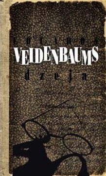

Eduards Veidenbaums
Оригинальное название: Dzejas
Год написания: 1896
Жанр: Социальная сатира, песенная поэзия
Язык перевода: Русский
Основные тематические линии этого сборника песен можно кратко описать так:
В целом это не единый сюжет, а сборник философских и сатирических размышлений, характерных для поэзии Эдуарда Веиденбаума и жанра социальной лирики.
Лирический герой
Обобщённый образ простого человека
Смерть
Образы общества
Свобода
Значение поэзии Вейденбаума в обществе стало заметным в начале XX века. Во время революционных событий 1905 года его стихи декламировались на собраниях, поскольку в них звучали идеи социальной критики и протеста против несправедливости. Таким образом, литература выполняла не только художественную, но и общественную функцию, становясь средством обсуждения политических и моральных вопросов.
Влияние творчества Вейденбаума продолжилось и в XX веке. В конце 1980-х годов, в период национального возрождения Латвии, стихи получили новое звучание благодаря музыкальным обработкам, в том числе в песнях композитора Юриса Кулакова. Эти произведения вновь сделали поэзию доступной широкой аудитории и показали её актуальность для современного общества. Реализм и философская глубина стихов Вейденбаума повлияли на развитие латышской литературы, отличаясь от традиционной поэзии своего времени высоким уровнем обобщений и размышлений о человеческой судьбе.
Здесь будет размещён текст перевода.
С сильными мира сего вместе ты мог бы быть И властвовать, и наслаждаться соблазнами, и радоваться каждый день, Но людские беды и нужду сердце твоё чувствует, И гнёт тьмы, и всякое бремя. И, не признанный отечеством, в чужбину уходишь ты далеко И проповедуешь истину, учишь, что люди — братья, Что богатства мира не способны нам даровать покоя уму, Если веры недостаёт и любви в сердце не накоплено. Ты нёс радость тем, кто во тьме, в тяжёлых страданиях задыхался, Ты для изнурённых, истерзанных сердец был источником жизни, Ты согревал человечество в стуже духовного рабства, И человечество отплатило тебе — на горе Голгофы. Почёт придаёт большая борода, Лесть каждому по вкусу. *** Много честных людей на свете живёт, Они трудятся, как муравьи, и усердно копят; Они проклинают пиво, они проклинают крепкое, И трудятся, и копят, пока песок их не покроет. Много разумных людей на свете живёт, Они ловко присваивают чужие усилия; С белыми манжетами и жёстким воротником Они в сутолоке мира разъезжают, как властители. Но верующих глупцов создано больше всего, Они склоняют головки и в Боженьку верят. Такой лижет руки, когда его бьют и колют, И Боженьку благодарит, когда другой его обманывает. А «безумных» — четвёртая порода, К несчастью, их совсем немного, — Тех, кого за сердце хватает эта пьеса скорби, Кто глупцов к свету, к свободе зовёт. *** Можем много говорить и рассуждать, каково назначение человеческой жизни, Однако до конца никогда не дойдём, поверь мне, друг. Ясность смертному разуму скрыла высшая сила; Надеяться и гадать можно много, понять и знать — ничего. *** Иной всю жизнь изнуряется, Себе богатства грудами тащит; У него волосы от забот седеют, И воры не дают уснуть. Его вечно порабощают заботы и труд, А в конце всё же в могиле его гложет червь. Другой предаётся святой жизни, Лишь бормочет и молится, Каждое воскресенье ходит в церковь И грехи Богу исповедует. При жизни его сердце чувствует лишь страх, А в конце так же он умирает и тлеет. Иной в жизни славы жаждет, К ней одной устремлён его ум; Ему нравится, чтобы им восхищались, Иной радости у него нет. С маской лицемера ему жить весь век, И смерть всё равно его сражает и в могилу толкает. Я живу, как лёгкое перо, И брожу по свету, Всякий бродяга мне друг, Кто пивом не гнушается; И каждому желаю петь и смеяться, И живу себе дальше — пусть будет как будет. Всё моё богатство: маленькая трубка И толстый кисет табака. Я не боюсь бурлака, Что он у меня это украдёт. И потому могу петь и смеяться И живу себе дальше — пусть будет как будет. *** Утешение благочестивых Здесь, в мире, царят муки и стенания, Пока смерть не закроет глаза — тогда заботам конец. Там, в тёмной могиле, сладок покой, Там спи, пока не позовёт тебя голос ангелов К более прекрасной жизни, когда мёртвые восстанут И в небесном царстве будут черпать радость. Мы остаёмся жить, и нас ещё ждут Много слёз, боли и редкий какой-нибудь радостный миг, Ибо зла множество, много обмана, ненависти, — Все наши силы против них тщетны и напрасны. Как счастлив тот, кто достиг гавани И больше не чувствует мук и гибели жизни. *** Бог милостив: проповедников Дал вместе с господами тебе. Давно без них тебя в ад утащил бы Чёрт себе в слуги. *** Думаю я думы глубокие, Почему счастье меня ненавидит; Всё, что делаю, всё у меня не удаётся, Везде нога скользит. Другому и вовсе работать не надо, Деньги будто с неба сыплются; У меня жизнь суровая, жёсткая, Надо голодать, пока не умру. Нет при душе ни гроша, Спроси кого — кто тебе даст? Лучше однажды быстрая смерть, Чем жизнь в нищете. Озеро внизу блестит недалеко, Внутри там — будет заботам конец! Ну, прощайте, братья по беде, Больше не прозвучит мой голос. Дорога ещё мимо кабака ведёт, Внутри танцуют, поют и смеются, И через освещённое окно Вижу, как пиво в кружки льют. Неужто я уж совсем без гроша? Рука быстро шарит в кармане — Десять копеек ещё в кармане, Их перед смертью надо пропить. Спешу внутрь, одну кружку Осушаю, ещё одну, ещё… И с каждой каплей пива Жизнь становится мне дороже. Отложу умирание на утро, Сегодня поздно туда идти. Кабатчик, дашь ещё в долг? — Дам. — Дюжину пива сюда! *** В другой раз была такая беда: Красавица мне обещалась, Вечно будет верна — Глуп тот, кто женщинам верит! Скоро из города щёголь явился, Гладко одетый, причёсанный, Начал вокруг неё увиваться, Дарит украшения — всё ему дёшево. Думал я, она не позволит, Сердце ему не отдаст, Но как-то случайно — послушай — В церкви уже их оглашают. Кровь во мне в гневе кипит, И хоть сердце боль терзает, Но жаждущий мести Кулак сжимает рукоять ножа. Им умереть! — Поспешно я шёл, Тут окликнул меня друг: куда? Пропустим по рюмке на дорогу! Пойдём со мной в кабак. Пили, пили… уж рассвет занимался — Забыто всё, что заботы причиняло, Ноги голову едва слушают, И гнев уже исчез. Потому теперь каждый раз Выпиваю, когда на душе тяжело, И если ноги идут криво, То это ведь вовсе не грех. *** Иди и гонись лишь за деньгами, Обманывай и мошенничай, сколько хватит сил, Смотри только на свою выгоду, Рви у других, рви, где можешь, Однако действуй обдуманно, Порядочно, твёрдо, законно. Властителям честь оказывай, Какие бы они ни были. Богачей держи в почёте: Могут помочь в чёрный день. Так живи добродетельно, Твёрдо, жёстко, законно. Будут у тебя деньги, будет положение, Основа жизни прочная, твёрдая; Будут тебя уважать, кланяясь, Будут на тебя работать, проклиная, Будешь ты властвовать добродетельно, Карать строго, законно. Тогда можешь пировать, Хорошо себя угощать; Взять жену покорную, Тучную, глупую, послушную; Веселиться добродетельно, Рожать детей законно. *** Я вспоминаю розовые времена И весёлые лица девушек, И цветами пёстрые долины, И веселье, смех и танцы. Как прекрасны были ушедшие образы, И сердцу так жаль, так жаль. Я вспоминаю, как силы когда-то поднимались И черпали источники мудрости, Но в ярком свете знаний Лишь множился отблеск сомнений. Давно в могиле покоятся высокие замыслы, И сердцу так жаль, так жаль. Теперь в холодном свете я чувствую, Как счастлив был бы, если б ещё был ребёнком, Ещё жил бы в надёжных надеждах И в светлых долинах счастья; Но назад возвращаться уже поздно, И сердцу так жаль, так жаль. --- Я думаю, что в мире Нет ничего разумного, И смысл нашей жизни — Сплошная глупость. Без цели человек бродит здесь, О мудрых вещах рассуждает, Но в конце всё глупо, Ибо желудок — бог всевышний, И каждый сам себе ближе всего, Как только проголодается. --- Груды книг Напрасно ты листаешь, Мёртвые заросли Исследуй, пока не умрёшь. Пустяки знаний Лишь глупцов питают, Радости мира Сияют светлее. --- Выпей, брат! Быстрыми шагами Дни жизни прочь бегут, Смерть зовёт в тёмные дома, Пей, пока в могилу не лезешь! Выпей, брат! Времена тяжёлые, Колючки жизни злобно колют. Выпей — меньше боль чувствуешь, Новую жизнь пиво варит. Выпей, брат! Утопи разум — Разум лишь груды печалей воздвигает. Только глупец копит мысли, Мудрый в ад их швыряет. --- Каждый тебе честь воздаёт, усердный муж, Своими трудами ты нажил богатство. Пусть не каждое средство было у тебя чисто, Да что с того, раз одет ты в бархат. Благодетелем народа каждый тебя назовёт, Хоть сердце у тебя камень и холодно, как снег. Но такова уж однажды мода мира И не кончится раньше, чем земной шар. --- Истинный философ не пессимист, А жизнь весело вкушает И радуется, сколько может. Ещё ячмень в полях пышно зреет, Ещё не перевелись красивые девицы, Кому нравится — тот может терпеть заботы, А я лучше лежу в цветах. --- Если хочешь занять хорошее место, То кланяйся, гнись, лижи руки! Пусть другие зовут это постыдным; Да что с того, лишь бы хлеб был. К гордым столам богачей Ты смиренно подползай И словами сладкой лести, Сколько можешь, каждого чти. Но, ради Бога, с низшими Никогда пусть тебя не видят вместе. Лучше наступай ногой на слабых, Ибо разумный заботится лишь о себе. Так скоро ты достигнешь высокого места, Тебя будут славить, назовут великим умом; Ты положишь товарищей под ноги, И каждый будет бояться твоей власти. --- Если у тебя в мире чувствительное сердце, Глупцом ты будешь и поверишь пустякам. Веря самому себе, лишь заботы купишь: Лучше откажись от радостей жизни. Но если, холодно рассчитывая, Рассмотришь колёса машины судьбы, Тогда признаешься, улыбаясь, Что нигде не видишь печальных картин. --- Уже в прохладных песках дорогие друзья покоятся, С которыми ещё недавно За пенящимися кружками Весело я пил. Снова пришла молодая весна, И зелёными ветками девушки комнаты украшают, И песни Янова дня радостно звучат, Весёлый смех раздаётся в тихом воздухе. Но меня гнетёт тяжёлый груз печали, И в мечтах сердце туда стремится, Где в смертном сне дорогим друзьям Больше не мешают звуки праздника. --- Уже цветами украшены луга, Уже песнями колышется воздух, Светлая зелень покрывает холмы и овраги: Настал небесный май. И солнце так ласково, так ярко В ясной синеве сияет, И лиственные леса так пышны, И радостно бьётся сердце человека. Из пыли, из дыма Нас зовёт цветущая весна; Конец мрачным бедам и сердечной боли, Ещё в мире много радости. --- Уже веяния весны с юга текут, Уже жаворонки звонко поют в небе! Скоро последний лёд на холмах растает, И весна уже рассыпает цветы. Пусть свалится с каждого груз печали, Пусть сердца черпают солнце радости. Для бед ещё будет время, ведь раньше, чем дерево, Что зеленеет, побелеют наши кости. Как на крыльях бегут часы, мчится завистливое время, И скоро настанет тот миг, Когда увидит нас вода Кокита И кончится отрезок жизни. Так, пока ещё молодость в жилах течёт, Не дадим веселью угаснуть. Когда пробьёт тёмный час умирания, К покою да сможем тогда поспешить! --- Новый год уже пришёл, но всё по-старому Идёт своей дорогой дальше, как и шло. Под гнётом рабства сжатый, рабочий Несёт своё тяжёлое ярмо. Божий дом Стоит полон молящихся, что проповеднику Верят на слово, когда вместо земных благ После смерти он обещает небеса. В судах Сидят суровые господа, что по богатству Судят каждому справедливость. Кто богаче Других стал, у того дух наглости И насилия возрастает. --- Как лебеди белые облака плывут, С ними хотелось бы мне далеко умчаться, Туда, вдаль, где зимы не знают, Где розы вечно цветут и не вянут. — Зачем напрасно счастья жаждешь ты, сердце? Брось надежды раз и навсегда в тёмную могилу: От солнечных долин смертный отлучён, Ему жить в сыром болоте слёз, Где железо и топоры без устали гремят, Где рабы взывают о хлебе, о пище, Где слабый ломается, сильнейшим растоптан, И кровь и пот ежедневно текут. --- Как сны из мира поколения исчезают, Время скоро белит румяные щёки, И внизу мертвецы страшно гниют, Глубокая тишина обитает у врат вечности. И весна веет, и северный ветер дует По розово-прекрасной жизни, Но внизу у мёртвых жизнь дольше, И в тишине они свободно дремлют. Скоро улетает жизнь, напрасно пытаться Здесь добыть желанное счастье и радость, Там лишь счастье, где мертвецы тлеют, Моли Бога, чтоб послал удар. --- Когда яростные бури жизни грозят разорением, Когда в печали душа боится и плачет, Когда светлые мгновения счастья исчезают и рушатся, Когда надежды, как осенние листья, опадают, Тогда, человек, подумай, как краток миг В вечности времён — твой жизненный отрезок, Как в широком просторе среди великих звёздных сонмов Маленькая пылинка в лучах солнца — земля, — И, вознесённый выше ничтожества гибели, Твой дух будет свободен от жизненных бед и радостей. Зачем из-за пустяков поднимать стенания? Радостям юности вечно цвести! Живи зелёно, весело мчись, Хоть и долгов по самые уши. Живи легко, ходи лишь туда, Где слышен смех, где девушки пляшут. Не печалься о пустяках, когда станешь рассудительным, — Старым людям кобылья прыть. --- Кому нравится жить — пусть живёт, Кому больше не по душе — пусть умирает. Волю судьбы решает свободный: Одна пуля — и жизнь рушится. Пока ещё милы земные вещи, Оставайся, радуйся и танцуй. Но в Гадесе ещё много места, Езжай туда, когда заботы воют. Сахар лишь вкус портит, Некоторые любят лучше горчицу. Видно, потому в жизненном пути Некоторые охотно несут заботы. Но кому противны земные вещи, Пусть смело уезжает прочь, Ибо в Гадесе ещё много места, Хоть и живущих много. --- Зачем напрасно драгоценное время тратить И бумагой стихи марать? Давно окончился святой век лиры, Теперь человек кричит о хлебе. Ибо в наши прозаические дни Нет чести жалобным стихам: Голодному есть их нельзя дать, А сытый их не понимает. Ты пиши лёгкие романчики И разумно насмехайся, Чтобы широкой публике вызывать смех — Увидишь, как тогда пойдут дела: Будет большая слава, горы денег, И жизнью будешь наслаждаться, сколько сил хватит. --- Кто, гуляя по пёстрым цветочным долинам, Лишь подсчитывает, сколько сена они дадут, Пусть меня не читает. В моих стихах Он только злой дух себе наживёт. --- Бьюсь я, как голый по крапиве, Заботы мучат ночь и день, И тем временем, словно быстрый ветер, Весна жизни прочь бежит. Тьма, куда ни глянешь, Холод везде, куда ни пойдёшь. Ах, на всей широте мира Нет ни одного, кому бы счастье цвело! --- Где в тихой ночи соловьи поют, Туда слушать мне приятно идти: Там целоваться с прекрасными девушками И вырваться из житейских бед. Но больше нравится мне там, где пули поют, Где в бой идут свободные рабы, Где шумные песни звучат И в ад низвергаются гордые тираны. --- Пусть такие цели себе ставим, Что без вечности достичь можем. Пусть, живя, лишь розы рвём, Что толку, если сеять слёзы? --- Пусть человек не думает, что другой плох, Каждому честь равная на небесах дана; Лишь небесная сила над миром судит, То прославляет, то в бесславие бросает. Пусть человек подумает: жизнь наша коротка, Кто враждует при жизни — пусть скорее мирится. Как много таких, что дружбу ломают И к миру приходят лишь под песком, когда спят. Один другого глупцом, негодяем зовёт, Кто мудр, кто хорош — не знает никто: Во тьме мысли и суждения блуждают, И конец для каждого — лишь начало. Кто знает, не разумнее ли тот муж, Кто к вещам обычную меру применяет: В природе всё смешано, нет там чистоты, Всё мерится поверхностной величиной. К земле нас вечная тяжесть приковывает, И выше мы поднимаемся лишь подпираясь: Можно тысячу раз разум изнурять, Сомневаюсь, выйдет ли он за пределы природы. Лишь глупец может верить; у кого есть разум, тот знает, Что вздор — всё, что без мыслей утверждают. Лишь глупец может любить, ибо разумный видит, Что каждый любит лишь самого себя. --- Время быстрее мчится, чем колесо вагона, Несёт боли, несёт радости — кому как. Выслушайте меня, товарищи, у меня божественное око, Знаний у меня больше, чем у колдуна. Здесь в мире огромная толпа людей Лишь с вечными заботами сражается, И через заботы лишь немногим сияет луч счастья, И в могиле тонут быстрые надежды. И в конце оказывается, что всё было пустяком, Что с надеждой ты когда-то копил, Что труд, который здесь совершал, — глуп и напрасен, Всё кончилось и погибло. Тогда откройте глаза и смотрите! Без устали косу точа, Бежит смерть среди живых; нет залога, Что не умрёшь сегодня или завтра. Ещё день светел, ещё время весны, Выпьем — давно уже жажда! И будем пить, пока жилище кладбища Не избавит нас от похмельной боли. --- Мне злобная судьба Пёструю жизнь дала: То деньги есть, то голодаю, То радуюсь, то скорблю; Но всегда пью пиво, Хоть бы допиться до конца. Ходить слушать профессоров Мне не по нраву, туда лишь глупец пойдёт… И на полке давно сложены Пылящиеся фолианты; Ибо всегда пью пиво, Хоть бы допиться до конца. Когда нужда кошелёк грызёт И Мелкон кредитом давит, Я смеюсь — печалиться может другой, Ведь ещё не умер Хиршевиц. И всегда пью пиво, Хоть бы допиться до конца. Когда найдётся другой такой, Чей ум будет как у меня, Тогда в кабаке по-братски Мы снимем себе жильё И оба будем пить пиво, Пока не допьёмся до конца. --- Матери Лишь терниями был усыпан твой деятельный век. Завистники и память твою в могилу толкают, Но напрасно: как на севере заря алым светом Взойдёт и вечно будет жить твоё имя. --- Совет Мефистофеля Друг, на всём земном шаре Свободы найти нельзя. Везде жить надо по моде, Мудрому везде везёт. Оставь мечты! Гонись лишь за хлебом — Будешь счастлив, исчезнут все заботы. --- Проснись, проснись же, свободный дух, Встань и сломай гнёт рабства, Освободи страдальцев, утишь стоны — Проснись, благородный дух свободы! Тёмных тиранов низвергни на землю, Святых лицемеров-священников, Что, обманывая, мелют небесные пустяки. Отбрось обман веры. На землю господ, что в гордыне сидят, В расточительстве разбрасывая миллионы пота! На землю друзей и сторонников владычества, Что своих братьев давят и грабят! --- У нас, латышей, поэтов огромная рать, По праву мы даём им это имя, Ибо в их стихах живёт чарующий дух: Они сон нам дарят сладкий. И потому каждому обязанность — Честь таким благодетелям воздать, Что после труда отдых нам доставляют: И Юсминьш к таким причисляется. --- Взойти на Олимп нам запрещает сила богов, Потому в мире мы свой Олимп создаём! Кто презирает людей — тот не человек. Много в природе радостей — лишь бы выйти и черпать. Но страшный час недалёк, недалёк, Когда в башне раздастся мрачный звон, Когда пойдёшь туда, куда ушёл Шиллер, куда Кант. Против смерти нет у смертных ни силы, ни средства. --- Кто серьёзное лицо в веселье делает, Тот к вину примешивает полынь. Такому я желаю: когда он спать ляжет, Пусть окажется любимая в объятиях другого. --- Прочь раз навсегда отброшу мрачную печаль, Перестану по смерти тосковать, Начну верить, что у жизни есть цель, Тогда придёт сила, и дела пойдут лучше. В тёмной синеве сверкают звёзды, В вечном порядке движется их сонм; В мрачных волнах человеческой судьбы Без устали властвует божественный дух. Короток оказывается жизненный отрезок, Близко стоят — колыбель и могила; Но важен каждый миг, Жизнь хороша, когда цель хороша. Потому прочь печаль и беды! Буду трудиться, стараться, ещё есть время; Исправлю мерзкие следы прошлого, Счастье вернётся, лицо станет радостным. --- По грязным улицам льёт дождь, воют ветры, И в комнате так темно и холодно, и стол не накрыт, И, сидя одиноко, мысли начинают далеко уноситься, Давно уснувшие образы проходят перед глазами. Они рисуют мне родину, показывают прошлое, И светлые розовые картины переполняют печалью душу; Ибо давно в могилу погрузилось время счастья и радость, И пылающее сердце покрывает холодный зимний снег. --- По холмам и долинам Латвии С лицами, заботами исчерченными, Движется трудовой народ предков. Одежда на них простая, Под тяжёлой ношей чужаков Дремлет в рабстве придавленный дух. Хоть кровь несправедливо пролита, Не хватает места пролитым слезам, Но страшное время прошло: С господами спят рабы под песком, И ныне счастливым поколениям Светит лицо солнца свободы. --- По полям уже веет весна, Пусть заботы и печали исчезнут! Радость властвует по широкому миру, Время печалиться — когда тело тлеет. Когда кусты украшают цветы, Когда родня свадьбы справляет, Тогда стань ребёнком и пой, И самые красивые венки плети. Некто на годы вперёд гадает, Он видит заботы, больше ничего. Счастлив тот, кто может любить сейчас, И будущее его не обманет! --- Среди розовых цветов, украшаясь дома, В сладких долинах любви Мне скучно. В кровавую битву жизни идти, Где победа приходит к сильному борцу, Туда рвётся мой разум, тревожит сладкий сон, Зовёт в бой — чтобы погибнуть или властвовать! --- Назло тяжёлым временам Поёт весело наш круг, Радость сияет на всех лицах, Как светлый солнечный луч. И пиво в кружках сверкает, И быстро речи текут. Спасём прекрасные дни — Как снег, они быстро тают. --- Напрасно сожалеть о прежних грехах — Кто сможет собрать пролитую воду? Лучше собраться духом и силами И надеяться: ещё осенью сеют хлеб. Пусть молодой росток укроет холодный снег, Но придёт весна, и солнце, и радость. --- Мир создан богатым и широким, Земля способна в изобилии дать пищу. --- За честью, за властью, за богатством Без отдыха люди бегут, Они гонятся, борются, стараются, С заботами в могилы лезут. Пусть лавры украшают их могилы, Пусть в песнях героев их поминают, — Мне ни роскоши их, ни песен, Что тьма мертвецов окутывает. --- К идеалам стремятся великие духи; Но занять в жизни первое место Им мешают, их угнетают войны за хлеб, Их угнетают седые предрассудки. --- На небе бледная луна светит, В камышах лягушки квакают; Всё дальнее пространство покрыто туманом, И ручей в долине журчит. Я слушаю, и бесконечная жалость В глубине души меня терзает. То ли вечерняя тишина виновата, То ли судьбы тяжести давят? --- На небе звёзды сверкают и блестят, Над землёй веет дыхание весны, Летняя ночь. Как захвачено сердце! Оно обняло бы, целовало бы весь мир. И непостижимая тоска В груди поднимается и волнуется по возлюбленной. Но счастья и покоя оно не чувствует, И тоска лишь печаль рождает: Однажды и звёздам, и весне исчезнуть, И ближе с каждым годом могила. Каждого она однажды мрачно поглотит, Тут не поможет ни жалоба, ни мольба, ни плач. Что нам даёт жизнь столь ничтожная и суровая, Где к смертельным травам примешана радость? Что нам дают старания, серьёзный труд? Приходит смерть и учит, что всё лишь пустяк. Труд лишь даёт, чтобы не кончалась страшная повесть: Даёт детей, на которых возложено проклятие жизни. --- У неясной Мётры Там сердца бьются свободно, Хоть бури судьбы Дуют яростно и свирепо. Там в пламени юности Души ещё сияют, Без страха идут в опасности, Против тьмы воюют. --- Прочь с полей умчался снег, Весна, улыбаясь, рассыпает цветы, Птицы возвращаются, пробуждается радость, Освобождает сжатые груди от печали. Везде уже радостно поют и смеются, Любовью многие сердца связаны, Лига на мир счастье льёт Молодости, в чьих жилах кровь ещё горячо струится. В головокружении страсти одурманенный разум Не смотрит вдаль, лишь настоящее вкушает, Не слышит, как коса смерти свистит, Рядом скашивая, как скорбящие стонут. Головокружение проходит — ах, если б осталось! В холодном свете теперь мир предстаёт: Везде лишь муки и стенания, Груды трупов перед глазами встают. Ужасна, отвратительна и скучна жизнь! Везде лишь следы погибели и разорения; Поколение с земли поколение вытесняет, Вечно остаются лишь боль и печали. Вера, надежда, холод и голод! Большую толпу заботы ещё утешают, Розовым кажется взгляд в будущее. Рабочий в пашню мысли погружает. Но для того, кому острый свет сияет, Разум, что заставляет видеть далёкое, — С неба падают боги, В пыль рассыпаются идеалы. Так говорит философ-пессимист, Думая, что нашёл истину. Жаль, что при этом он моралист, Который возводит свою волю в закон. Зачем же то, что судьбой предопределено И неизменно, считать злом? Пусть человек всё принимает как шутку: Думая, лишь напрасно себе голову морочим. Всё когда-нибудь кончается, всё тленно: Если больше ценить радости, Меньше почувствуешь боль. Бедой было бы, если бы конца не было. Поэтому тот, кому жизнь розово светит, Полными глотками пусть жизнь пьёт; А кто уже к могиле шагает, Пусть шуткой превозмогает печаль. Творец мира, старый Бог, Конечно, сделал бы лучше, Если бы все могли радоваться И не знали бы боли. Но кто с ним пойдёт судиться? Мы не знаем даже его обители; Мудро он скрыт, Ибо ему не нравятся судебные тяжбы. Самоуправление нам дано, Как в волостях Балтики: Разум пусть решает низшие дела, Высшие решает веление судьбы. Но против того, что неизменно, Напрасно гневаться, напрасно браниться; Делай лишь то, что возможно, А если хочется — можешь и повеситься. Повеситься и смеяться, если хочешь уйти, Надеясь на лучшую жизнь в вечности; Глупостью нельзя назвать То, что человек свободно выбирает. --- Однажды зеленела юность, надежды цвели, Тогда кровь была горячей, тогда светлым был мир, И весь мир казался прекрасным, чудесным, И будущее сияло, как солнечный лик. Время ушло, надежды рассеялись как дым, Всё умерло, что прежде было дорогим и святым; Божественные образы стали бледными и мрачными, И не выросло ничего, что сеяла вера. И, когда опустели жажды познания И кончилось всё, что было прекрасным и святым, Сердце наполнилось смертельной болью; Но прошлое и её уже покрывает. И теперь я презираю мирские вещи, И вижу, что всё — лишь морок и ничто. К счастью и несчастью грудь моя закрыта, Мне всё равно — печаль или радость. --- Снег уходит с полей, Луга зеленеют, реки текут. К чему теперь зимние труды, Когда тает зимний лёд? Время собирать розы В цветущих долинах, Время пить сладкий мёд С прекрасных девичьих лиц. В ветвях ив соловьи Ночью поют чудесно; Смотри, у тихого берега Девушка слушает. Возьми меня с собой, в прекраснейшее, Целуясь, пусть наступит рассвет; Под звёздным небом Настанет миг любви. Вот, мы обнялись, Сердце к сердцу бьётся, В сладких мечтах тонем — Забыта тяжёлая судьба жизни. Соловей на ветке ивы Поёт, и жалобен его голос. На востоке уже алеет солнце — Сладким мечтам приходит конец. --- «Народ, народ, светлый латышский народ, Ты увенчан лаврами славы! Свобода дарована тебе свыше, Старайся воспользоваться свободой!» Так в газетах и на балах кричат, Толстые лжецы зовут народу счастье. Сальные попы с лицемерным видом Вопят вместе и ещё громче: «Латыши, латыши, благочестивого духа Пусть Бог хранит вас и впредь! Тогда будет мир, тогда ещё долго В сладкой тьме можно будет рыбачить». А мы, молодое поколение, цвет нации, Бежим, кричим вместе с темнотой, И «как ешь хлеб — так пой песню!» Становится правилом для студентов. Позор! Ведь ясно видим мы, Каковы намерения вождей: Трудиться, служить, верить по-старому, Чтить господ — вот их программа. И мы следуем, и отдаём честь Мешкам с деньгами, мерзким мошенникам, А тех, кто менее богат, Считаем грубыми «недочеловеками». --- Утешение верующих Ещё не погряз я так глубоко в грязи, Ещё есть сила вернуться и стать лучше: Сердце ещё не утратило божественного света, Душа ещё жаждет высшего. У каждого есть задача нести трудности — Таков замысел Бога, создавшего нас. Никому не дозволено бросать жизнь, Хоть многие плакали и страдали, живя. У нас цель выше звёзд, Хоть разум сомневается и будет сомневаться. Пусть на молодого ложится саван, Пусть слёзы его печалят, Но всё же мы должны верить, Что не падает ни волос, Не ведомый и не видимый божественному оку. Мы должны жить, верить, Что дух бессмертен, Что после смерти зацветёт весна. В трудах и битвах с заботами Душа наша будет сиять небесной радостью. Это я знаю, это я умею: Пива выпить — и запеть. С заходом солнца пить начинаю, С восходом солнца — я опять тут. Другим нет до этого дела, Если мне нравится зелёная жизнь. Это я знаю, это я умею: Дев любить, поцелуи дарить, И к таким охотно прихожу, Которые умеют любить. Сегодня красотку обнимаю, Завтра её уж другому отдам. Это я знаю, это я умею: Не сердись, святой муж! Если ничего не добьюсь, Всё же свободен от забот. Какое другим до того дело, Если мне нравится зелёная жизнь? --- Вспомни страдающих братьев, Что в оковах рабства томятся, Кому при жизни могилу роют, — Освободи страдающих братьев! --- Тьма и туман Покрывают мир, Вечной заботой Жизнь лишь полна. Тщетен труд, Напрасна работа — В конце тебя в землю Съест червь. Сны о счастье — Ложь и пустяк; Нету на свете Ожидаемого блага. Лишь страдания, боль Чувствует сердце, Проклята участь Человека! --- Берег реки тенист липами, В траве пахнут ландыши, Медленно время идёт, Розовое вино несут. Не забывай прекрасных нимф, Которые жаждут поцелуев, Обеих бери с собой, И лиру не оставляй. Я уже слышу сладкие звуки, Розовое вино пьются губами, Мысли блуждают в раю, Сердце волнуется любовью. --- К концу моя жизнь идёт, Скоро сердце биться перестанет: В постоянный дом Тело в могиле ляжет. Я рад, что голос смерти Уносит меня прочь Из мира, где вечный холод, Где видят и слышат лишь зло. Настанет весна, и цветы распустятся, На могилах они зацветут; Моё жилище будет тихим и милым, Беды меня не коснутся. --- Будет ли война с немцами, русскими — Пусть другие решают; Я же посвящаю себя радости; Нет беды, что могла бы меня сломить. С утра до позднего вечера, Когда солнце склоняется, Я служу славному Гамбрину И божеству уподобляюсь сам. --- Разве в древности только мужи были, Кого судьба не тяготила, Чьё лицо оставалось спокойным, как у Сократа, Хотя бушевали бури? И ныне всякий имеет власть над природой, В ком сердце сияет вечным духом. --- Стенай и жди, Трудись и заботься — Уйдут улыбки, Останутся лишь заботы. Свари пиво, Не печалься о конце; Не думай много — Будешь счастлив, Пока могила не примет. Глотай сегодня, Глотай и завтра, А если нет денег — Дадут в долг. --- Ещё десять-двадцать лет — И занавес закроется; Старался ты или ленился — Голос судьбы зовёт в тление. Но в жизни мечталось О вечных вещах: О счастье, славе, чести — Лавры хотят на могиле. Но лавры, честь и слава Исчезают, как и ты сам; И дальше, и снова дальше Катится страшное колесо вечности. --- Простые люди В рабстве изнемогают, В рабстве слёзы льют О лучшей жизни. У простых людей Глупые головы: Сами куют себе Цепи рабства. Слушают, что мелют тёмные, Канцелярские обманщики, Чтят и служат властям, Боясь их. Сказки о боге и дьяволе Держат их в страхе; Глупые головы Долго ещё будут страдать. --- На земле нет справедливости — Сила кулака правит; Кто вред чинит властям — Тот объявлен грешником. Судьи — почтенные мошенники, Которые «по закону» Сдирают кожу с других; И проповедник, вор, Утешает: «Терпи — На небе будет лучше». На земле нет счастья — Лишь звериный рёв, Каждый у другого Кусок изо рта рвёт; И сытые писатели льстят: «Практичный народ, У него много надежд». Да, надежд немало — Но пройдёт время, И снова увидишь Лицо, полное мук; Лентяи будут богатеть, Честных будут грабить, Люди станут жаждать Небесного царства, А под ногами Правду будут топтать; И поэты снова сложат Глупые песни И сами будут стонать, Когда их настигнет голод. --- Всем вещам приходит конец; Напрасно строить великие планы, Напрасно трудиться — Скоро раздастся голос смерти. --- Всё опротивело, надоело — Зачем задерживаться в живых? Пусть пуля решит судьбу, Тебе не будет жаль. Этот ничтожный, глупый покой Не даст счастья; Даже если был бы властителем — Не смог бы радовать. Властителем ты не станешь, А будешь попран и оттеснён; Кому жалеть такую жизнь? Тебя ждут лишь гнев и боль, Которые не утолить. Тебе предстоит подчиняться сильным, Пока цепи жизни не падут. И если даже мелькнёт счастье — Как зёрнышко для слепой курицы, Твой дух всё равно зовёт к исчезновению. Нет добра в том, что гниёт, Что обречено на гибель. Лучше поспеши — Чтобы в Гадес уйти. --- Всё — шутка, смейся над всем, Пусть другие плачут. Если хорошо — наслаждайся, Если не нравится — уходи. Уходи в другие края, В одном месте скоро задохнёшься; Иди хоть до края мира — Пока не найдёшь радость. Если нет денег — крылья коротки; Лежи там, где судьба держит, Жди смерти и рая, Старей и ложись в могилу.